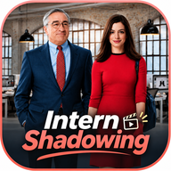

영상은 고정됩니다. 문장만 스크롤하세요. ※ PDF·SRT 대조 교정본 — 화면 자막과 일부 차이 가능
영어 표현
동영상은 보관함에서 한 번 저장하세요.

각 영상을 한 번만 가져오면 앱의 기기 내 저장 공간에 보관됩니다. 이후 앱을 다시 열어도 영상을 선택할 필요가 없습니다. 파일 이름이 바뀌어도 직접 Part를 지정하므로 문제없습니다.
약 775MB의 저장 공간이 필요할 수 있습니다. 휴대폰 용량·브라우저 할당량에 따라 일부 영상 저장이 실패할 수 있으며, 브라우저 데이터 삭제 시 영상도 없어집니다. 영상은 GitHub에 업로드되지 않습니다.
현재 기기에서 영상 파일을 선택해 저장하세요.
Part 1의 영상 주소가 등록되어 있습니다. Part 2~7은 영상 URL이 있을 때만 연결됩니다.
문장을 선택하세요.